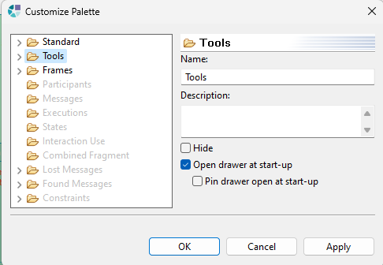

Sirius Evolution Specification: Palette customization enhancements
Preamble
Summary: This document describe the existing options to customize the layout of the Sirius palette, lists the issues identified with these tools, and provides suggestions for improvements.
| Version |
Status |
Date |
Authors |
Changes |
| v0.1 |
DRAFT |
2024-06-27 |
gplouhinec |
Initial version. |
Relevant tickets :
Introduction
Currently, the layout Sirius palette can be customized with several menus and options, available with a right click:
-
Layout menu is used to modify the layout of menus and buttons. 4 possible layouts: Columns, List, Icons only, Details:
-
Use Large Icons menu display large icons. This currently only works with buttons in the palette header.
-
Customize... menu invokes a dialog «Customize Palette» to rename a section or a tool, providing a description or hiding an item. Note that the name if filled with the label of the corresponding tool defined in the VSM, and the description with the Documentation tab of the tool.

-
Hide: When checked, this option hide the tool or tool section in the palette. This allows the user to limit the number of tools displayed in the palette.
-
Open drawer at start-up: When checked, this option automatically opens the drawer (tool section) specified in the palette when the editor is launched. This means that the contents of this drawer will be visible as soon as the editor is opened, avoiding the need for the user to click to open it manually.
-
Pin drawer at start-up: If checked, this option keeps the specified drawer (tool section) open and pinned when opened. This prevents the drawer from closing automatically if the user clicks elsewhere. In other words, the drawer will always remain open as long as this option is activated, facilitating rapid access to the tools contained in this drawer without the need to constantly reopen it.
-
Settings... menu invokes a dialog «Palette Settings» to change the font of tools displayed in the palette, modify the layout (same options as described above) and some other drawer options:
-
Always close when opening another drawer: This option, if checked, will cause a drawer to close automatically as soon as another drawer is opened. This keeps the interface clean and avoids cluttering the space with several drawers open simultaneously.
-
Close automatically when there is not enough room: This option, if checked, automatically closes drawers when there is not enough available space to display all open drawers. This helps optimize space utilization and prevent the interface from becoming overloaded.
-
Never close: This option, if checked, keeps all drawers open regardless of available space or the opening of other drawers. This can be useful if the user wishes to have access to all open drawers at the same time, without them closing automatically.
Identified issues
- Modifications made via the «Customize Palette» dialog are persisted but not properly used by the Sirius palette implementation. As a result, changes made are lost each time the diagram is closed.
- When you modify the name or description of a tool via the «Customize Palette» dialog , a DOMException is thrown.
- The «Use Large Icons» option currently only works with buttons in the palette header. All palette icons should be affected.
Specification
Goals
- Modifications made in the «Customize Palette» dialog are correctly persisted, changes are visible when the dialog is validated, and they are always visible when the session is restarted or Eclipse is reopened.
- The DOMException error will be identified and resolved, so no more errors in the error log when the «Customize Palette» dialog is closed.
- The «Use large icons» option will work on all palette icons, not just header icons.
Quick analysis
- Options are persisted in
org.eclipse.gmf.runtime.gef.ui.palette.customize.PaletteCustomizerEx.save(), when there is no DOMException, they are well persisted, but not used by Sirius. Tools in Sirius are configured in
org.eclipse.sirius.diagram.ui.tools.internal.palette.PaletteManagerImpl.updateContainer(Session, DDiagram, PaletteContainer, List<? extends ToolInstance>).
- For the DOMException, it is thrown because the id set to the palette entry in
org.eclipse.sirius.diagram.ui.tools.internal.palette.PaletteManagerImpl.addElementToContainer(PaletteContainer, ToolEntry, Option<PaletteEntry>) is an EMF URI, and in
org.eclipse.gmf.runtime.gef.ui.palette.customize.PaletteCustomizerEx.save() >
org.eclipse.gmf.runtime.gef.ui.palette.customize.PaletteCustomizerEx.getMementoForEntry(IMemento, PaletteEntry), there is a check that the ID is a valid «XML format», which is not the case. See
com.sun.org.apache.xerces.internal.util.XMLChar.isValidName(String)
API Changes
The
org.eclipse.sirius.diagram.ui.tools.internal.palette.PaletteManagerImpl class is an internal class; no API changes.
Documentation
We’ll add a section to the doc explaining what the palette customization menus are for, and what is and isn’t supported.
Tests and Non-regression strategy
Manual tests will be written.